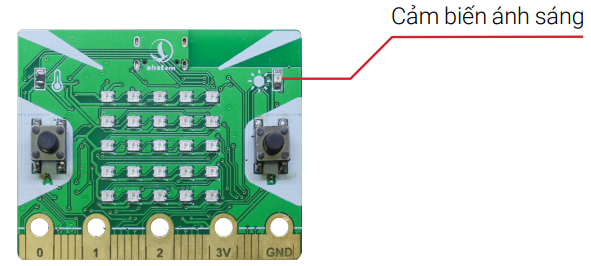
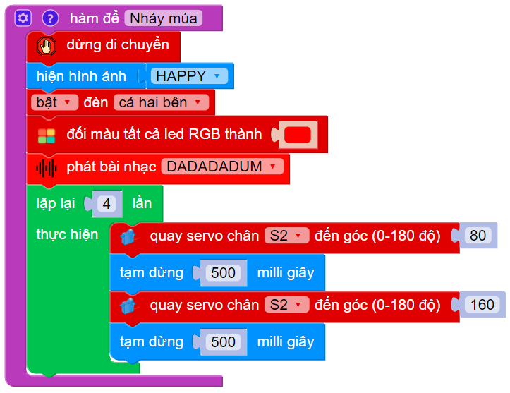
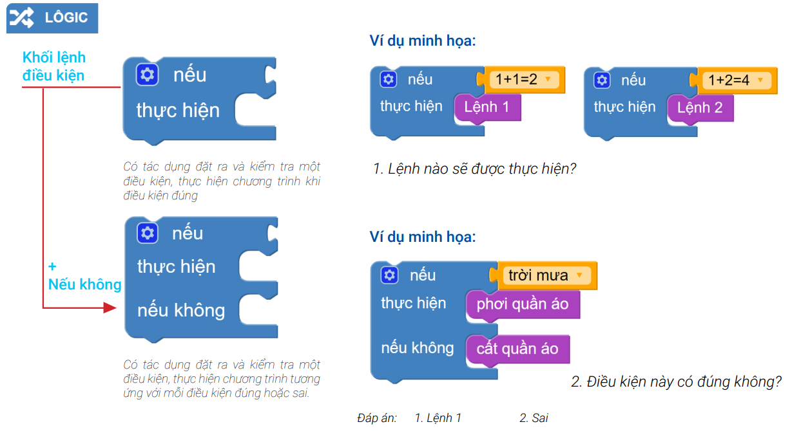
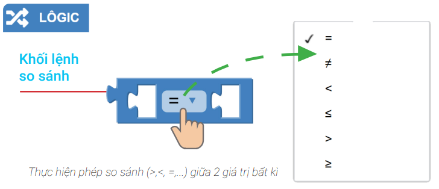
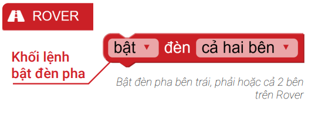
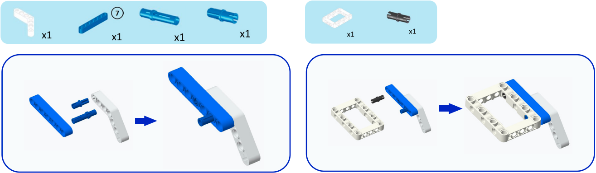
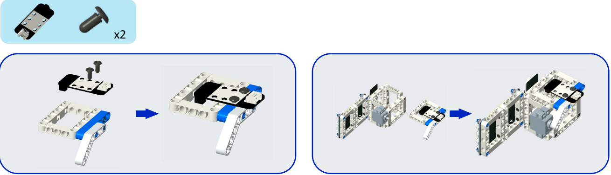
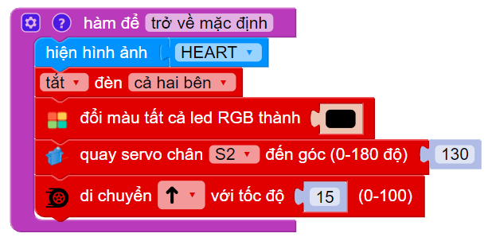
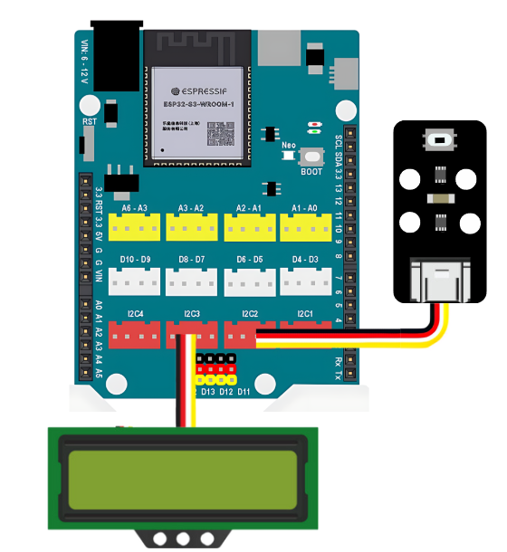

Cửa hàng
Yolo:Bit
xBot
Game Kit - Kit học lập trình game
xBuild Creator Kit
Các module mở rộng
Tài liệu học STEM
Một thùng rác thông minh với khả năng tự động mở nắp khi có người đến gần sẽ mang lại sự tiện lợi hơn rất nhiều, giúp thành phố xanh sạch đẹp hơn. Trong bài này, chúng ta hãy cùng lập trình một thùng rác có khả năng tự mở nắp khi có người và tự động báo hiệu khi thùng rác đầy nhé
Cảm biến vật cản (P0)

Cảm biến chuyển động PIR (P1)

Động cơ Servo (P4)

Lưu ý: Chỉnh góc Servo về 20o trước khi lắp ráp
Kết nối

  
Quay Servo chân P4 đến góc 20 độ (đóng nắp thùng rác)

Tạo điều kiện: nếu cảm biến PIR phát hiện có người

Lồng điều kiện ghép vào bên trong: nếu thùng rác chưa đầy (cảm biến vật cản không phát hiện có rác trong thùng, khối lệnh có giá trị sai)
Đổi màu đèn LED thành màu xanh và phát bài nhạc JUMP_UP để báo hiệu, sau đó quay Servo đến góc 90 để mở nắp thùng rác:
Sau 3 giây, ta đóng nắp thùng rác (quay Servo về góc 20 độ)
Nếu cảm biến PIR phát hiện có người nhưng thùng rác đang đầy, hiển thị chữ Full lên màn hình:
Tạm dừng chương trình trong khoảng 200 ms
Nhấn nút A để mở, nhấn nút B để đóng thùng rác khi cần
Thùng rác thông minh: Tại đây